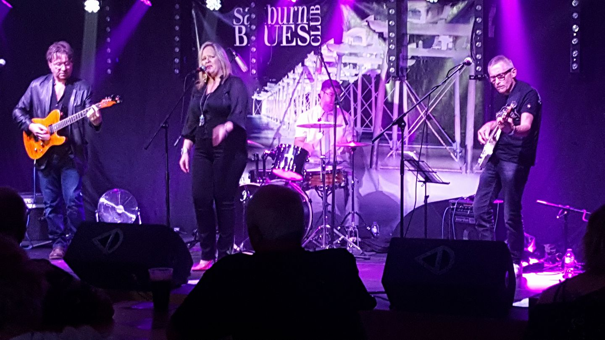
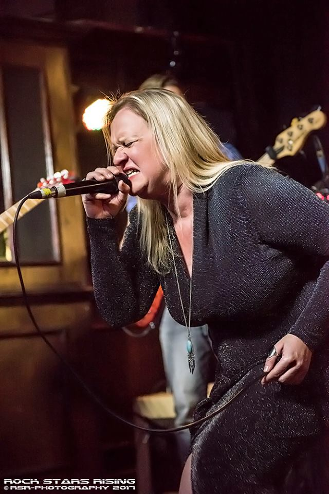
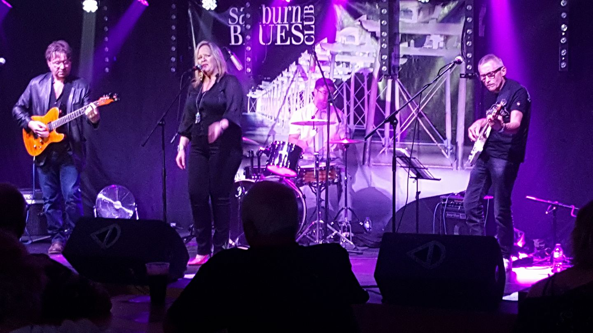
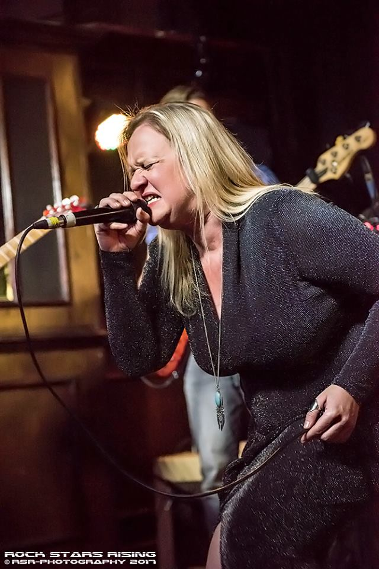

Blues Band
Emma Wilson is a sensational singer, band-leader and front-woman who has drawn together a group of musicians true to complimenting her unique voice, inspirational song choices and powerful performance. Influenced by many great artists including - Ann Peebles, Aretha Franklin, The Pointer Sisters, Robert Cray, Bonnie Raitt & Etta James, Emma's shows are exciting, emotional and dynamic. THE BAND Emma Wilson - Lead Vocal & Percussion Al Harrington - Guitar & Vocal Paul Donnelly - Guitar John Daniel - Bass Adam Featherstone - Drums
The band's following is growing with support from dedicated blues fans and the finest blues afficionados, journalists, promoters and photographers - who are commenting that Emma has an unique sound and is an artist who is contributing in a very exciting way to the British Blues Scene. Now recording for a release in late 2018 and with Gigs coming in the UK and elsewhere in Europe - keep watching - get yourself to a show - don't miss out!
 




They Say...
"Emma is a big fan of Aretha Franklin and Ann Peebles and boy does she do their material well!"
Mike Prendergast -(Blues Promoter - Darlington Blues Festival)
"Deserves comparing with the great blues sirens, oozes class and charm"
Paul Dubbleman (Rock Photographer & Journalist)
"I love her voice, it's so soulful"
Mick Glossop (Record Producer for Van Morrison, John Lee Hooker)
"Emma reminds us how good the blues can really be"
Chris Scott Wilson (Author "Redcar Jazz Club"/Music journalist)
"Love it! Good Strong voice...Cookin'!"
Hughie Flint (Drums for John Mayall and The Bluesbreakers/McGuinnes Flint/The Blues Band)
"Very talented, A big personality with a big voice!"
Ian McHugh ("Blues is the Truth" Radio)
"I love your experimental stuff"
Arthur Brown ("The Crazy World of Arthur Brown")
"Emma is a shining light among a sea of pretenders"
Mitch Hiller (Songwriter & Singer)
"Emma is without doubt one of the finest, most versatile Jazz & Blues Singers in the UK"
London Blues Festival
"She's World Class!"
Michele Drees (Drummer and founder of London Jazz tap Project)
"Quite honestly one of THE best blues/rock singers to come out of the North East of England"
Ottie *Austin* McLaughlin - Legendary Record Promoter